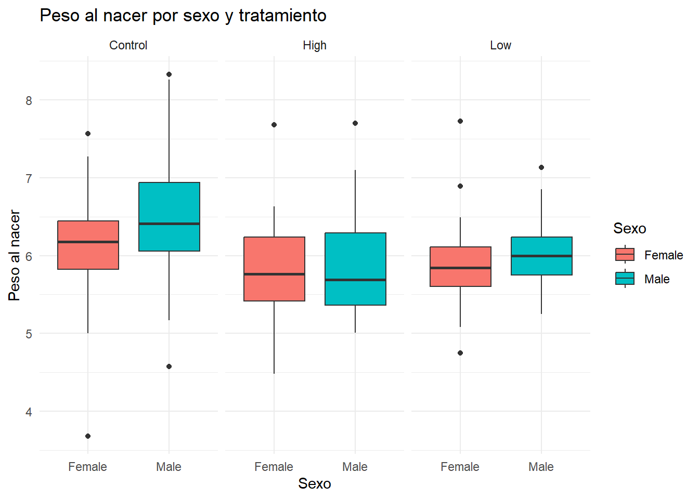

Para esta ayudantía se muestran los datos de 30 ratas hembra que fueron asignadas al azar a uno de tres grupos de tratamiento, consistentes en la administración de una dosis alta, baja y control de una droga.
El objetivo del estudio fue comparar el peso de los cachorros de las crías de las camadas nacidas de ratas hembra que recibieron el tratamiento con drogas en dosis altas y bajas con el peso de los cachorros de las camadas que recibieron el tratamiento de control. La pregunta de investigación fue ¿Existe un efecto del tratamiento con drogas (dosis alta, baja, control) en el peso al nacer?
Las variables incluidas aparecen en la siguiente tabla:
weight -> Peso de nacimiento de cada cría
sex -> Sexo de la rata (male, female)
Litter -> N° identificación de la camada
Lsize -> Tamaño de la camada (número de crías por camada)
Treatment ->Nivel de dosis de fármaco experimental asignado a la camada (alto, bajo, control)
1. Inspeccionando la base de datos indique: ¿qué variable indica la medida repetida? ¿dónde se muestra la dependencia? Fundamente su respuesta.
# A tibble: 6 × 5
weight sex Litter Lsize Treatment
<chr> <chr> <chr> <dbl> <chr>
1 6.6 Male 1 12 Control
2 7.4 Male 1 12 Control
3 7.15 Male 1 12 Control
4 7.24 Male 1 12 Control
5 7.1 Male 1 12 Control
6 6.04 Male 1 12 Control
La variable que indica la medida repetida es weight, ya que se mide el peso al nacer de varias crías dentro de la misma camada. Es decir, se repite la medición (peso) para distintos individuos que pertenecen a una misma unidad experimental (la madre o camada).
La dependencia se muestra en la variable Litter, que identifica a cada camada. Al observar la base de datos, se ve que hay múltiples crías con el mismo valor de Litter, lo que indica que existen observaciones agrupadas dentro de una misma unidad (la madre).
Por ejemplo, las primeras 6 observaciones del dataset muestran a 6 crías distintas, todas de la camada 1 (Litter = 1). Esto implica que las mediciones no son independientes entre sí, ya que el peso de los cachorros dentro de una misma camada puede estar influenciado por factores maternos comunes (genética, ambiente intrauterino, etc.). Por lo tanto, se debe considerar un enfoque que permita modelar esta correlación intra-camada, como los modelos mixtos con intercepto aleatorio por Litter.
2. Elabore un gráfico que muestre el comportamiento de la variable “weight” respecto al sexo, según cada grupo de tratamiento. Interprete sus hallazgos.
library(ggplot2)# Convertir las variables a factor si aún no lo estánratas$sex <-as.factor(ratas$sex)ratas$Treatment <-as.factor(ratas$Treatment)# Crear boxplotggplot(ratas, aes(x = sex, y =as.numeric(weight), fill = sex)) +geom_boxplot() +facet_wrap(~Treatment) +theme_minimal() +labs(title ="Peso al nacer por sexo y tratamiento",x ="Sexo",y ="Peso al nacer",fill ="Sexo" )

Control:
Los machos parecen tener una mediana de peso ligeramente mayor que las hembras.
Mayor dispersión en los machos (mayor rango intercuartil y presencia de outliers).
Tratamiento Alto:
Las diferencias entre sexos son menores.
Ambos sexos presentan una mediana más baja que el grupo Control, sugiriendo posible efecto reductor del tratamiento.
Tratamiento Bajo:
Patrón similar al tratamiento alto: medianas bajas y muy similares entre sexos.
Dispersión más reducida que en el grupo control.
Conclusión general: El tratamiento parece reducir el peso al nacer comparado con el grupo control, independientemente del sexo. Aunque hay una ligera diferencia de peso entre machos y hembras, no parece ser muy marcada ni constante en todos los tratamientos.
3. Realice un modelo lineal para explicar la variable “weight” en función del tratamiento, sexo y tamaño de la camada. Muestre e interprete los resultados más relevantes, incluyendo el R2.
ratas$Treatment <-as.factor(ratas$Treatment)ratas$sex <-as.factor(ratas$sex)ratas$weight <-as.numeric(ratas$weight)# Ajustar el modelo linealmodelo_lm <-lm(weight ~ Treatment + sex + Lsize, data = ratas)# Mostrar resultados del modelosummary(modelo_lm)
Call:
lm(formula = weight ~ Treatment + sex + Lsize, data = ratas)
Residuals:
Min 1Q Median 3Q Max
-3.14564 -0.26967 -0.01531 0.32388 1.50024
Coefficients:
Estimate Std. Error t value Pr(>|t|)
(Intercept) 7.95010 0.15397 51.635 < 2e-16 ***
TreatmentHigh -0.90616 0.08586 -10.554 < 2e-16 ***
TreatmentLow -0.42504 0.06293 -6.754 6.89e-11 ***
sexMale 0.27388 0.05632 4.863 1.83e-06 ***
Lsize -0.12494 0.01021 -12.236 < 2e-16 ***
---
Signif. codes: 0 '***' 0.001 '**' 0.01 '*' 0.05 '.' 0.1 ' ' 1
Residual standard error: 0.501 on 317 degrees of freedom
Multiple R-squared: 0.4086, Adjusted R-squared: 0.4012
F-statistic: 54.76 on 4 and 317 DF, p-value: < 2.2e-16
Intercepto (Control - Female):
El peso promedio al nacer para una cría hembra en el grupo control con tamaño de camada 0 (hipotético) es de aproximadamente 7.9 gramos.
Tratamiento:
Las crías del grupo High pesan en promedio 0.9g menos que las del grupo Control (p < 0.01), efecto estadísticamente significativo.
Las crías del grupo Low pesan en promedio 0.4g menos que las del grupo control, también significativo (p < 0.05).
Sexo:
Los machos pesan 0.27g más que las hembras, efecto estadísticamente significativo. (p = 0.06).
Tamaño de camada (Lsize):
Por cada cría adicional en la camada, el peso promedio baja 0.12g, lo que sugiere un efecto de competencia intrauterina. Este resultado es no significativo, pero podría ser relevante clínicamente.
R² = 0.40: El modelo explica el 40% de la variabilidad del peso al nacer.
4. Ajuste un modelo para explicar la variable “weight” en función del tratamiento, sexo y tamaño de la camada, con intercepto aleatorio. Muestre e interprete los resultados más relevantes. ¿Qué puede decir respecto al modelo obtenido en la pregunta 3?
library(lme4)modelo_mixto <-lmer(weight ~ Treatment + sex + Lsize + (1| Litter), data = ratas)# Resumen del modelosummary(modelo_mixto)
Linear mixed model fit by REML ['lmerMod']
Formula: weight ~ Treatment + sex + Lsize + (1 | Litter)
Data: ratas
REML criterion at convergence: 397
Scaled residuals:
Min 1Q Median 3Q Max
-7.5743 -0.4699 0.0111 0.5712 3.0603
Random effects:
Groups Name Variance Std.Dev.
Litter (Intercept) 0.0974 0.3121
Residual 0.1628 0.4035
Number of obs: 322, groups: Litter, 27
Fixed effects:
Estimate Std. Error t value
(Intercept) 7.95079 0.27255 29.172
TreatmentHigh -0.85870 0.18181 -4.723
TreatmentLow -0.42850 0.15040 -2.849
sexMale 0.35908 0.04749 7.562
Lsize -0.12900 0.01879 -6.864
Correlation of Fixed Effects:
(Intr) TrtmnH TrtmnL sexMal
TreatmntHgh -0.585
TreatmentLw -0.309 0.423
sexMale -0.063 0.009 0.040
Lsize -0.916 0.390 0.035 -0.043
Efectos fijos Los efectos principales se interpretan como efectos globales cuando no hay interacción
Intercepto: Peso promedio en hembras del grupo Control, con Lsize = 0 (hipotético).
TreatmentHigh: Crías del grupo High pesan 0.86g menos que Control. > Aquí, el coeficiente de TreatmentHigh es el efecto promedio del tratamiento, independientemente del sexo.
TreatmentLow: Crías del grupo Low pesan 0.43g menos que Control.
sexMale: Los machos pesan en promedio 0.36g más que las hembras. > El coeficiente de sexMale es la diferencia promedio entre machos y hembras, independientemente del tratamiento.
Lsize: Por cada cría adicional en la camada, el peso baja 0.13g.
Efectos aleatorios
Intercepto aleatorio por Litter: Varianza = 0.097 → SD = 0.31 (indica que hay variabilidad real entre camadas, justifica el uso del modelo mixto)
Error residual (variabilidad entre crías dentro de la misma camada): SD = 0.40
5. Al modelo obtenido en la pregunta 4, agregue la interacción entre tratamiento y sexo, determine si es significativa o no. ¿Cómo se podría interpretar esta interacción?
library(lme4)modelo_interaccion <-lmer(weight ~ Treatment * sex + Lsize + (1| Litter), data = ratas)summary(modelo_interaccion)
Linear mixed model fit by REML ['lmerMod']
Formula: weight ~ Treatment * sex + Lsize + (1 | Litter)
Data: ratas
REML criterion at convergence: 401.1
Scaled residuals:
Min 1Q Median 3Q Max
-7.4725 -0.5001 0.0291 0.5735 3.0096
Random effects:
Groups Name Variance Std.Dev.
Litter (Intercept) 0.09652 0.3107
Residual 0.16349 0.4043
Number of obs: 322, groups: Litter, 27
Fixed effects:
Estimate Std. Error t value
(Intercept) 7.91165 0.27496 28.773
TreatmentHigh -0.79903 0.19429 -4.112
TreatmentLow -0.38317 0.15967 -2.400
sexMale 0.41169 0.07315 5.628
Lsize -0.12838 0.01875 -6.846
TreatmentHigh:sexMale -0.10702 0.13176 -0.812
TreatmentLow:sexMale -0.08387 0.10568 -0.794
Correlation of Fixed Effects:
(Intr) TrtmnH TrtmnL sexMal Lsize TrtH:M
TreatmntHgh -0.581
TreatmentLw -0.336 0.434
sexMale -0.155 0.221 0.269
Lsize -0.910 0.372 0.045 -0.001
TrtmntHgh:M 0.105 -0.360 -0.150 -0.555 -0.020
TrtmntLw:sM 0.141 -0.166 -0.345 -0.692 -0.036 0.385
Efectos principales: Aqui se interpretan de forma diferente porque los efectos principales ya no son efectos globales, sino condicionales.
Intercepto: Peso promedio de hembras en grupo Control con Lsize = 0
TreatmentHigh: El grupo High pesa menos que el grupo Control (en hembras). Diferencia de peso en hembras: High vs Control
TreatmentLow: El grupo Low también pesa menos que el Control (en hembras).
sexMale: Los machos pesan más que las hembras (en grupo Control). Diferencia entre machos y hembras en grupo Control
Lsize: A mayor tamaño de camada, menor peso al nacer.
Interacción Treatment * sex:
Cuando tú incluyes una interacción como Treatment * sex, estás diciendo que: “El efecto de Treatment depende del valor de sex, y viceversa.”
TreatmentHigh:sexMale: no significativo - Cambio adicional en el efecto del tratamiento High para machos vs hembras
TreatmentLow:sexMale: no significativo
Conclusión sobre la interacción:
Las interacciones no son estadísticamente significativas (ambos t-values < 1).
Esto indica que el efecto del tratamiento sobre el peso al nacer es similar en machos y hembras.
Aunque los coeficientes son negativos, no hay evidencia estadística de que el tratamiento afecte de forma distinta según el sexo.
El término TreatmentHigh:sexMale = -0.40 si hubiera sido significativo EJEMPLO
Los machos del grupo de dosis alta pesan 0.40g menos que las hembras, más allá del efecto principal de sexo y del tratamiento por separado. En otras palabras, el tratamiento afecta más negativamente a los machos.
“El efecto del tratamiento High es 0.4g más negativo en los machos que en las hembras.”
O visto desde otro ángulo:
“La diferencia entre sexos es menor en el grupo High que en el grupo Control.”
Es decir, el tratamiento reduce el peso más en machos que en hembras.
📈 Tip profesional Usar emmeans o modelbased::estimate_means() para obtener las medias ajustadas por grupo es la forma más clara y recomendada de comunicar resultados cuando hay interacción.
6. Compare los dos modelos anteriores y seleccione uno de los dos modelos para responder a la pregunta de investigación. Justifique su respuesta.